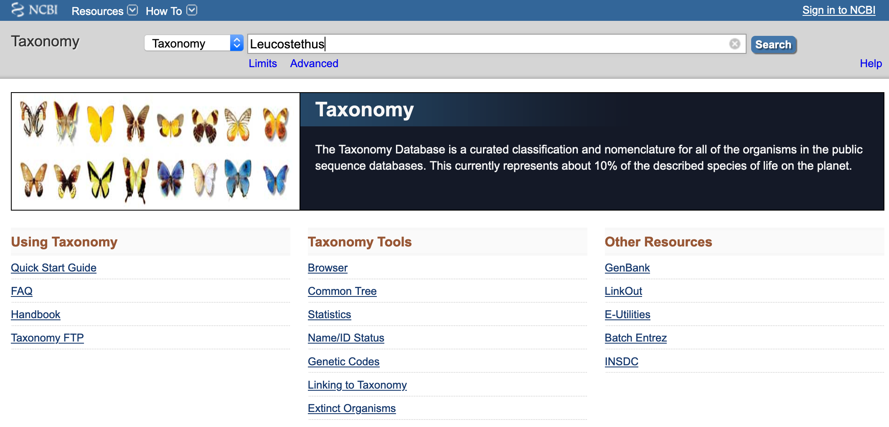

Session 11 – Sequence Alignments
One central objective in many bioinformatics analyses is to understand the relationship between a set of biological sequences (i.e., DNA, RNA, proteins). To address this objective, we must organize these sequences in order to reflect their evolutionary, functional or structural relationships. Therefore, sequence aligning is just the insertion of gaps or spaces of varying length within the otherwise continuous sequences that we want to investigate. A set of diverse alignment programs achieve this by identifying homologous positions and add gaps or spaces in optimal sites to maximize the number of aligned homologous positions. In an evolutionary context, these gaps represent insertions and deletions (indels) within the genome that are hypothesized to have occurred during the evolutionary history of species or populations being studied. However, defining homologous sites is, at times complex, given the noise (i.e., non-homologous similarities in the sequences) resulting from convergent evolution.
11.1 Retrieving sequences using ‘rentrez’
For alignments, you must have a minimum of two sequences to perform an alignment.
1) We will retrieve some sequences from GenBank using the ‘rentrez’ package and we will restrict to one genera of poison frogs: Ameerega. You can try any group of organisms that you want.
In our example, we can first retrieve by searching the genus.
## make sure that 'rentrez' is loaded
require(rentrez)
## Download some nucleotide sequences from NCBI for Ameerega [Organism] that correspond to the gene COI
Ameerega_name_COX1 <- "Ameerega[Organism] AND COI[Gene]"
Ameerega_seq_IDs <- entrez_search(db="nuccore", term= Ameerega_name_COX1)
str(Ameerega_seq_IDs)
#List of 5
# $ ids : chr [1:20] "1952638364" "1952638361" "1952638358" "1074806460" ...
# $ count : int 37
# $ retmax : int 20
# $ QueryTranslation: chr "\"Ameerega\"[Organism] AND COI[Gene]"
# $ file :Classes 'XMLInternalDocument', 'XMLAbstractDocument' <externalptr>
# - attr(*, "class")= chr [1:2] "esearch" "list"
## Note: the $ids indicate that 37 sequences exist in Ameerega for COX1 -- make sure to use Ameerega_seq_IDs$ids
Ameerega_seqs_fasta <- entrez_fetch(db="nuccore", id=Ameerega_seq_IDs$ids, rettype="fasta")
cat(Ameerega_seqs_fasta)11.2 Retrieving sequences manually from NCBI
2) In some cases, you might have already the NCBI accession numbers and you can use ‘rentrez’ to retrieve such specific sequences. However, you might want to explore if sequences are associated to your group of interest. In this example, we will exemplify this by retrieving some outgroups of Ameerega frogs in the genera Leucostethus, Colostethus, Epipedobates and Silverstoneia.
You can search those using a point-and-click approach as follows:
- Go to the NCBI>Taxonomy.
- Click on Taxonomy. An type the family, genus or species of interest and click Search.

- Click on the taxon of interest (e.g., Leucostethus). You will get a list of species associated with this genus.

- For this example, we will click on Leucostethus fugax. You will get a list of sequences associated with this taxon.

- For this example, we want the nucleotide sequences and their accession numbers. You will click on 19 next to Nucleotide.
- For this example, we get the accession number
MW042037.1that is associated with Leucostethus fugax voucher QCAZ16513 cytochrome oxidase subunit I (COI) gene .

11.3 Retrieving accession numbers
3) You can use ‘rentrez’ to explore each genus for such specific sequences rather than the tedious option 2) as indicated above.
We will retrieve sequences for the other outgroups of Ameerega: Colostethus, Epipedobates and Silverstoneia.
## sequences for Colostethus and the corresponding COI gene
Colostethus_name_COX1 <- "Colostethus[Organism] AND COI[Gene]"
Colostethus_seq_IDs <- entrez_search(db="nuccore", term= Colostethus_name_COX1)
Colostethus_seq_fasta <- entrez_fetch(db="nuccore", id=Colostethus_seq_IDs$ids, rettype="fasta")
cat(Colostethus_seq_fasta)
# for example, we will retrieve “KR862889.1 Colostethus pratti voucher CH 6816 cytochrome oxidase subunit 1 (COI) gene, partial cds; mitochondria”
## sequences for Epipedobates and the corresponding COI gene
Epipedobates_name_COX1 <- "Epipedobates[Organism] AND COI[Gene]"
Epipedobates_seq_IDs <- entrez_search(db="nuccore", term= Epipedobates_name_COX1)
Epipedobates_seq_fasta <- entrez_fetch(db="nuccore", id=Epipedobates_seq_IDs$ids, rettype="fasta")
cat(Epipedobates_seq_fasta)
# for example, we will retrieve “MW042036.1 Epipedobates machalilla voucher QCAZ16527 cytochrome oxidase subunit I (COI) gene, partial cds; mitochondrial”
## sequences for Silverstoneia and the corresponding COI gene
Silverstoneia_name_COX1 <- "Silverstoneia[Organism] AND COI[Gene]"
Silverstoneia_seq_IDs <- entrez_search(db="nuccore", term= Silverstoneia_name_COX1)
Silverstoneia_seq_fasta <- entrez_fetch(db="nuccore", id=Silverstoneia_seq_IDs$ids, rettype="fasta")
cat(Silverstoneia_seq_fasta)
# for example, we will retrieve “MW042039.1 Silverstoneia flotator voucher TNHCFS4804 cytochrome oxidase subunit I (COI) gene, partial cds; mitochondrial”4) With the NCBI accession numbers, you can use ‘rentrez’ to extract these sequences to vector and append to the Ameerega vector in 1).
These accession numbers were determined in 2) and 3): MW042037.1, KR862889.1, MW042036.1 and MW042039.1.
## sequences for outgroups of Ameerega
outgroups_seq_fasta <- entrez_fetch(db="nuccore",
id=c("MW042037.1", "KR862889.1", "MW042036.1", "MW042039.1"),
rettype="fasta")
cat(outgroups_seq_fasta)
#>MW042037.1 Leucostethus fugax voucher QCAZ16513 cytochrome oxidase subunit I (COI) gene, partial cds; mitochondrial
#GTGATAATTACCCGATGATTATTTTCCACAAACCACAAAGACATTGGAACCCTATACCTAGTATTTGGCG
#CTTGGGCAGGAATAGTGGGGACTGCCCTAAGTCTCCTCATTCGTGCAGAATTAAGCCAGCCTGGATCCTT
#ACTTGGTGACGACCAAATTTACAACGTAATCGTCACTGCCCACGCTTTCGTAATAATTTTTTTTATGGTT
#ATACCCATCTTAATTGGGGGATTTGGCAATTGATTAGTCCCATTAATAATTGGAGCACCAGACATAGCTT
#TTCCTCGAATAAACAATATAAGCTTCTGACTTTTACCCCCCTCTTTCCTTCTTCTATTAGCTTCTGCAGG
#...Now, we can append this vector to Ameerega_seqs_fasta and we can save these sequences in a text file in your working directory.
## append sequences in a single vector
all_sequences <- c(Ameerega_seqs_fasta, outgroups_seq_fasta)
## this is exclusive to your OWN COMPUTER change it accordingly
setwd("~/Desktop/Teach_R/my_working_directory")
write(all_sequences, "Ameerega_COI_seqs_fasta.txt")Now we can import the nucleotide sequences from this file that are in fasta format into R.
## make sure Biostrings is loaded
require(Biostrings)
## load sequences
Ameerega_Biostrings_set <- readDNAStringSet(filepath = "~/Desktop/Teach_R/my_working_directory/Ameerega_COI_seqs_fasta.txt",
format = "fasta")
Ameerega_Biostrings_set
#A DNAStringSet instance of length 24
# width seq names
# [1] 1539 GTGATAATTACTCGATGATTATTTTCCACCAACCATAAAGATATTGGAACCTTATAC...TATACGGGTCTCCCCCACCTTATCACACATTTGAGGAAGCCGTTTACTCCAAAATT MW042032.1 Ameere...
# [2] 1539 GTGATAATTACTCGATGATTATTTTCCACCAACCATAAAGACATTGGAACCTTATAT...TGTACGGATCCCCCCCTCCCTACCATACATTTGAAGAAGCCGTTTATTCCAAAATT MW042031.1 Ameere...
# [3] 1539 GTGATAATTACTCGATGATTATTTTCTACCAACCACAAAGACATCGGAACTTTATAC...TATACGGATCCCCCCCACCTTACCACACTTTTGAGGAAGCCGTTTACTCCAAAATT MW042030.1 Ameere...
# [4] 646 AACTTTATACCTAGTATTTGGGGCATGAGCGGGCATAGTCGGTACTGCTCTTAGCCT...GTAACCTAAATACCACTTTTTTTGACCCGGCAGGGGGAGGTGACCCTGTCCTATAC KU494334.1 Ameere...
# [5] 647 GAACTTTATACCTAGTGTTTGGGGCATGAGCAGGCATAGTCGGCACTGCTCTCAGCC...GTAACTTAAATACCACCTTCTTTGACCCAGCAGGGGGAGGTGACCCTGTTCTATAC KU494333.1 Ameere...
# ... ... ...
#[20] 658 AACTTTATATCTAGTATTTGGGGCATGGGCAGGCATAGTCGGTACTGCTCTCAGCCT...CCACTTTCTTTGACCCAGCAGGAGGAGGCGACCCCGTCTTATACCAACACCTGTTC DQ502825.1 Epiped...
#[21] 1539 GTGATAATTACCCGATGATTATTTTCCACAAACCACAAAGACATTGGAACCCTATAC...TATACGGAACCCCTCCCCCTTATCACACATTTGAAGAAGCTGTTTACTCCAAAATT MW042037.1 Leucos...
#[22] 658 AACTTTATACNTTGTATTNGGGGCATGGGCNGGAATAGTNGGAACCGCCCTAAGCCT...CTACTTTCTTCGACCCGGCTGGTGGAGGAGACCCCGTTCTCTACCAACATCTCTTT KR862889.1 Colost...
#[23] 1539 GTGATAATTACCCGATGATTATTCTCCACAAACCATAAAGATATCGGAACCCTATAT...TATATGGCTCCCCTCCTCCTTACCACACATTCGAGGAAGCTGTTTATTCTAAAGTA MW042036.1 Epiped...
#[24] 1539 GTGATAATTACCCGATGATTATTTTCTACAAACCACAAAGACATTGGAACTTTATAT...TGTATGGATCACCACCACCATATCACACGTTTGAAGAAGCTGTTTATTCTAAAATT MW042039.1 Silver...11.4 Alignment with DECIPHER
We will align our collected sequences with DECIPHER. This R package has several vignettes, but this one is most useful for alignments.
5) The DECIPHER aligner is very easy to use as long as you have already your sequences as a XStringSet from Biostrings (i.e., DNAStringSet, RNAStringSet or AAStringSet).
## install DECIPHER
if (!requireNamespace("BiocManager", quietly = TRUE))
install.packages("BiocManager")
BiocManager::install("DECIPHER")
## make sure that DECIPHER and Biostrings are loaded
require(DECIPHER)
require(Biostrings)
## load YOUR sequences or the example
Ameerega_Biostrings_set <- readDNAStringSet(filepath = "~/Desktop/Teach_R/my_working_directory/Ameerega_COI_seqs_fasta.txt",
format = "fasta")We just can proceed to do the alignment with function AlignSeqs().
## simple alignment procedure for DNA
Ameerega_aligned <- AlignSeqs(Ameerega_Biostrings_set)
#Determining distance matrix based on shared 9-mers:
# |==========================================================================================================================================| 100%
#
#Time difference of 0.08 secs
#
#Clustering into groups by similarity:
# |==========================================================================================================================================| 100%
#
#Alignment converged - skipping remaining iteration.
#
#Refining the alignment:
# |==========================================================================================================================================| 100%
#
#Time difference of 0.18 secs
## you can call DNAstringSet aligned
#Ameerega_aligned
# A DNAStringSet instance of length 24
# width seq names
# [1] 1539 GTGATAATTACTCGATGATTATTTTCCACCAACCATAAAGATATTGGAACCTTATAC...TATACGGGTCTCCCCCACCTTATCACACATTTGAGGAAGCCGTTTACTCCAAAATT MW042032.1 Ameere...
# [2] 1539 GTGATAATTACTCGATGATTATTTTCCACCAACCATAAAGACATTGGAACCTTATAT...TGTACGGATCCCCCCCTCCCTACCATACATTTGAAGAAGCCGTTTATTCCAAAATT MW042031.1 Ameere...
# [3] 1539 GTGATAATTACTCGATGATTATTTTCTACCAACCACAAAGACATCGGAACTTTATAC...TATACGGATCCCCCCCACCTTACCACACTTTTGAGGAAGCCGTTTACTCCAAAATT MW042030.1 Ameere...
# [4] 1539 -----------------------------------------------AACTTTATAC...-------------------------------------------------------- KU494334.1 Ameere...
# [5] 1539 ----------------------------------------------GAACTTTATAC...-------------------------------------------------------- KU494333.1 Ameere...
# ... ... ...
#[20] 1539 -----------------------------------------------AACTTTATAT...-------------------------------------------------------- DQ502825.1 Epiped...
#[21] 1539 GTGATAATTACCCGATGATTATTTTCCACAAACCACAAAGACATTGGAACCCTATAC...TATACGGAACCCCTCCCCCTTATCACACATTTGAAGAAGCTGTTTACTCCAAAATT MW042037.1 Leucos...
#[22] 1539 -----------------------------------------------AACTTTATAC...-------------------------------------------------------- KR862889.1 Colost...
#[23] 1539 GTGATAATTACCCGATGATTATTCTCCACAAACCATAAAGATATCGGAACCCTATAT...TATATGGCTCCCCTCCTCCTTACCACACATTCGAGGAAGCTGTTTATTCTAAAGTA MW042036.1 Epiped...
#[24] 1539 GTGATAATTACCCGATGATTATTTTCTACAAACCACAAAGACATTGGAACTTTATAT...TGTATGGATCACCACCACCATATCACACGTTTGAAGAAGCTGTTTATTCTAAAATT MW042039.1 Silver...11.5 Visualize alignment
6) We can visualize the alignment with BrowseSeqs() and a new tab in your browser will appear with the alignment to visualize.
## simple visualization of alignment
BrowseSeqs(Ameerega_aligned)7) We can align the sequences based on their amino acid translation using AlignTranslation(). Notice that the genetic code needs to be specified, if this is not the standard.
## if the genetic code is standard, you do not need to define it. In this case, we have sequences from the mitochondria and this needs to be defined as follows.
mt_vertebrate_code <- getGeneticCode("SGC1")
mt_vertebrate_code
#TTT TTC TTA TTG TCT TCC TCA TCG TAT TAC TAA TAG TGT TGC TGA TGG CTT CTC CTA CTG CCT CCC CCA CCG CAT CAC CAA CAG CGT CGC CGA CGG ATT ATC ATA ATG ACT
#"F" "F" "L" "L" "S" "S" "S" "S" "Y" "Y" "*" "*" "C" "C" "W" "W" "L" "L" "L" "L" "P" "P" "P" "P" "H" "H" "Q" "Q" "R" "R" "R" "R" "I" "I" "M" "M" "T"
#ACC ACA ACG AAT AAC AAA AAG AGT AGC AGA AGG GTT GTC GTA GTG GCT GCC GCA GCG GAT GAC GAA GAG GGT GGC GGA GGG
#"T" "T" "T" "N" "N" "K" "K" "S" "S" "*" "*" "V" "V" "V" "V" "A" "A" "A" "A" "D" "D" "E" "E" "G" "G" "G" "G"
#attr(,"alt_init_codons")
#[1] "ATT" "ATC" "GTG"
## you translate and align your nucleotide sequence into amino acids (AA).
Ameerega_AA_set <- AlignTranslation(Ameerega_Biostrings_set, type="AAStringSet", geneticCode = mt_vertebrate_code)
## see the AAStringSet
Ameerega_AA_set
#A AAStringSet instance of length 24
# width seq names
# [1] 555 MMITRWLFSTNHKDIGTLYLVFGAWAGMVGTALSLLIRAELSQPGSLLGDDQIYNVI...SLISLVAVIIMMFIIWEAFSSKRLPFPAEMTPTNVEWLYGSPPPYHTFEEAVYSKI MW042032.1 Ameere...
# [2] 555 MMITRWLFSTNHKDIGTLYLVFGAWAGMVGTALSLLIRAELSQPGSLLGDDQIYNVI...SLISLVAVIIMMFIIWEAFSSKRLPLPAEMTPTNVEWLYGSPPPYHTFEEAVYSKI MW042031.1 Ameere...
# [3] 555 MMITRWLFSTNHKDIGTLYLVFGAWAGMVGTALSLLIRAELSQPGSLLGDDQIYNVI...SLISLVAVIIMMFIIWEAFSSKRLPLPAEMTPTNVEWLYGSPPPYHTFEEAVYSKI MW042030.1 Ameere...
# [4] 555 ---------------+TLYLVFGAWAGMVGTALSLLIRAELSQPGSLLGDDQIYNVI...-------------------------------------------------------- KU494334.1 Ameere...
# [5] 555 ---------------+TLYLVFGAWAGMVGTALSLLIRAELSQPGSLLGDDQIYNVI...-------------------------------------------------------- KU494333.1 Ameere...
# ... ... ...
#[20] 555 ---------------+TLYLVFGAWAGMVGTALSLLIRAELSQPGSLLGDDQIYNVI...-------------------------------------------------------- DQ502825.1 Epiped...
#[21] 555 MMITRWLFSTNHKDIGTLYLVFGAWAGMVGTALSLLIRAELSQPGSLLGDDQIYNVI...SLISLVAVILMMFIIWEAFSSKRLFLTAEMTSTNVEWLYGTPPPYHTFEEAVYSKI MW042037.1 Leucos...
#[22] 555 ---------------+TLYXVXGAWAGMVGTALSLLIRAELSQPGSLLGDDQIYNVI...-------------------------------------------------------- KR862889.1 Colost...
#[23] 555 MMITRWLFSTNHKDIGTLYLVFGAWAGMVGTALSLLIRAELSQPGSLLGDDQIYNVI...SLISLVAVIIMMFIIWEAFSSKRLFLNAEMTPTNVEWLYGSPPPYHTFEEAVYSKV MW042036.1 Epiped...
#[24] 555 MMITRWLFSTNHKDIGTLYLVFGAWAGMVGTALSLLIRAELSQPGSLLGDDQIYNVI...SLISLVAVILMMFIIWEAFSSKRLFLNAEMTPTNVEWLYGSPPPYHTFEEAVYSKI MW042039.1 Silver...
## simple visualization of AA alignment with references to sequence 1
BrowseSeqs(Ameerega_AA_set, highlight=1)
8) You can further improve the alignment with the function AdjustAlignment(). This function makes small adjustments with the goal of removing artifacts of the progressive alignment process by shifting groups of gaps left and right to find their optimal positioning in a multiple sequence alignment. This function will efficiently correct most obvious inaccuracies that could be found by-eye and this is repeatable and not subjective (i.e., a common criticism of alignments done by-eye).
## some further adjustments if necessary
Ameerega_aligned_end <- AdjustAlignment(Ameerega_aligned)
Ameerega_AA_set_end <- AdjustAlignment(Ameerega_AA_set)
## simple visualization of alignments
BrowseSeqs(Ameerega_aligned_end)
BrowseSeqs(Ameerega_AA_set_end)These alignments look pretty good. However, in the Ameerega_AA_set_end one sequence looks problematic: DQ502832.1 Epipedobates braccatus isolate 537 cytochrome oxidase subunit I-like (COI) gene, partial sequence; mitochondrial.
This might be the result of the translation, but we will eliminate this sequence in further analyses.
## to remove a sequence from DNAStringSet, AAStringSet, we need to make sure is the one that we want to eliminate
## in this case is [18]
str(Ameerega_AA_set_end[18])
#Formal class 'AAStringSet' [package "Biostrings"] with 5 slots
# ..@ pool :Formal class 'SharedRaw_Pool' [package "XVector"] with 2 slots
# .. .. ..@ xp_list :List of 1
# .. .. .. ..$ :<externalptr>
# .. .. ..@ .link_to_cached_object_list:List of 1
# .. .. .. ..$ :<environment: 0x7fdf44ffa898>
# ..@ ranges :Formal class 'GroupedIRanges' [package "XVector"] with 7 slots
# .. .. ..@ group : int 1
# .. .. ..@ start : int 9436
# .. .. ..@ width : int 555
# .. .. ..@ NAMES : chr "DQ502832.1 Epipedobates braccatus isolate 537 cytochrome oxidase subunit I-like (COI) gene, partial sequence; mitochondrial"
# .. .. ..@ elementType : chr "ANY"
# .. .. ..@ elementMetadata: NULL
# .. .. ..@ metadata : list()
# ..@ elementType : chr "AAString"
# ..@ elementMetadata: NULL
# ..@ metadata : list()
## we remove AA seq 18 and adjust the alignment
Ameerega_AA_set_clean <- Ameerega_AA_set[-18]
Ameerega_AA_set_clean <- AdjustAlignment(Ameerega_AA_set_clean)
## we make sure that it is not present in the alignment
BrowseSeqs(Ameerega_AA_set_clean)The sequence with errors is now removed from further analyses.

11.6 Save alignment to file
9) With our aligned sequences, we can export these as fasta and then they can be used to reconstruct phylogenetic trees, get protein properties and other analyses. We can save our sequences as fasta using the function writeXStringSet().
# this is exclusive to your OWN COMPUTER change it accordingly
setwd("~/Desktop/Teach_R/my_working_directory")
## We save the nucleotide alignment
writeXStringSet(Ameerega_aligned_end, file="Ameerega_aligned_end.fasta", format="fasta")
writeXStringSet(Ameerega_AA_set_clean, file="Ameerega_AA_aligned_end.fasta", format="fasta")11.7 Concatenate and align several markers
In many cases, you might combine several markers, segments, exons or other disconnected (not adjacent) sequences. We will follow a procedure in DECIPHER.
10) We need to find a sequence that is not adjacent to our COI marker, in this case we will download cytochrome b (CYTB) and COI sequences of Ameerega, Colostethus, Epipedobates and Silverstoneia.
## make sure rentrez is loaded
require(rentrez)
## sequences for of all using a loop and list to store each genus CYTB sequences
my_genus <- c("Ameerega", "Colostethus", "Epipedobates", "Silverstoneia", "Leucostethus")
## loop for CYTB
collect_CYTB_list_seqs <- list()
for (i in 1:length(my_genus)) {
one_genus_CYTB <- paste0(my_genus[i], "[Organism] AND CYTB[Gene]")
one_genus_seq_IDs <- entrez_search(db="nuccore", term= one_genus_CYTB )
one_genus_seq_fasta <- entrez_fetch(db="nuccore", id=one_genus_seq_IDs$ids, rettype="fasta")
## collect sequences in list
collect_CYTB_list_seqs[[i]] <- one_genus_seq_fasta
## visualize the collected sequences
cat("these are CYTB sequences from genus:", my_genus[i], "\n")
Sys.sleep(1)
cat(collect_CYTB_list_seqs[[i]])
}
## loop for COI
collect_COI_list_seqs <- list()
for (i in 1:length(my_genus)) {
one_genus_COI <- paste0(my_genus[i], "[Organism] AND COI[Gene]")
one_genus_seq_IDs <- entrez_search(db="nuccore", term= one_genus_COI )
one_genus_seq_fasta <- entrez_fetch(db="nuccore", id=one_genus_seq_IDs$ids, rettype="fasta")
## collect sequences in list
collect_COI_list_seqs[[i]] <- one_genus_seq_fasta
## visualize the collected sequences
cat("these are COI sequences from genus:", my_genus[i], "\n")
Sys.sleep(1)
cat(collect_COI_list_seqs[[i]])
}11) Now, we need to inspect these sequences and choose the one sequence per species per maker (e.g., for Ameerega bilinguis one CYTB and one COI). We will record the accession number for these two sequences per species. You will do this for example, but in most cases, you will collect the accession numbers for the markers of interest in your project. You might also need to check the NCBI website.
## visualize sequences in console
# "Ameerega"
cat(collect_CYTB_list_seqs[[1]])
cat(collect_COI_list_seqs[[1]])
# "Colostethus"
cat(collect_CYTB_list_seqs[[2]])
cat(collect_COI_list_seqs[[2]])
# "Epipedobates"
cat(collect_CYTB_list_seqs[[3]])
cat(collect_COI_list_seqs[[3]])
# "Silverstoneia"
cat(collect_CYTB_list_seqs[[4]])
cat(collect_COI_list_seqs[[4]])
# "Leucostethus"
cat(collect_CYTB_list_seqs[[5]])
cat(collect_COI_list_seqs[[5]])
## build vectors before a dataframe
collected_list <- list(
data.frame(taxa = "Ameerega_bilinguis", CYTB = "AF128559.1", COX = "MW042030.1", stringsAsFactors = FALSE),
data.frame(taxa = "Ameerega_hahneli", CYTB = "HQ290575", COX = "MW042031.1", stringsAsFactors = FALSE),
data.frame(taxa = "Ameerega_parvula", CYTB = "HQ290576.1", COX = "MW042032.1", stringsAsFactors = FALSE),
data.frame(taxa = "Ameerega_braccata", CYTB = "DQ502556.1", COX = "KU494333.1", stringsAsFactors = FALSE),
data.frame(taxa = "Ameerega_trivittata", CYTB = "HQ290579.1", COX = "DQ502903.1", stringsAsFactors = FALSE),
data.frame(taxa = "Ameerega_silverstonei", CYTB = "DQ523154.1", COX = "DQ502851.1", stringsAsFactors = FALSE),
data.frame(taxa = "Colostethus_panamansis", CYTB = "HQ290546.1", COX = "KC129189.1", stringsAsFactors = FALSE),
data.frame(taxa = "Colostethus_pratti", CYTB = "HQ290547.1", COX = "KF807016.1", stringsAsFactors = FALSE),
data.frame(taxa = "Epipedobates_boulengeri", CYTB = "HQ290574.1", COX = "MW042034.1", stringsAsFactors = FALSE),
data.frame(taxa = "Epipedobates_machalilla", CYTB = "HQ290542.1", COX = "MW042036.1", stringsAsFactors = FALSE),
data.frame(taxa = "Silverstoneia_flotator", CYTB = "HQ290537.1", COX = "MW042039.1", stringsAsFactors = FALSE),
data.frame(taxa = "Leucostethus_fugax", CYTB = NA, COX = "MW042037.1", stringsAsFactors = FALSE))
## build a dataframe
collected_df <- do.call(rbind, collected_list)
collected_df
# taxa CYTB COX
#1 Ameerega_bilinguis AF128559.1 MW042030.1
#2 Ameerega_hahneli HQ290575 MW042031.1
#3 Ameerega_parvula HQ290576.1 MW042032.1
#4 Ameerega_braccata DQ502556.1 KU494333.1
#5 Ameerega_trivittata HQ290579.1 DQ502903.1
#6 Ameerega_silverstonei DQ523154.1 DQ502851.1
#7 Colostethus_panamansis HQ290546.1 KC129189.1
#8 Colostethus_pratti HQ290547.1 KF807016.1
#9 Epipedobates_boulengeri HQ290574.1 MW042034.1
#10 Epipedobates_machalilla HQ290542.1 MW042036.1
#11 Silverstoneia_flotator HQ290537.1 MW042039.1
#12 Leucostethus_fugax <NA> MW042037.112) We can now retrieve these sequences in a data frame and build a fasta file with commo taxon names.
## retrive sequences for each taxon
collected_CYTB_seqs <- character()
collected_COI_seqs <- character()
## start of loop
for(i in 1:nrow(collected_df)) {
# i <- 12
one_taxon_name <- collected_df[i,"taxa"]
# retrieve sequences
if(!is.na(collected_df[i,"CYTB"])) {
one_taxon_CYTB <- entrez_fetch(db="nuccore", id=collected_df[i,"CYTB"], rettype="fasta")
} else { one_taxon_CYTB <- "--------"}
if(!is.na(collected_df[i,"COX"])) {
one_taxon_COI <- entrez_fetch(db="nuccore", id=collected_df[i,"COX"], rettype="fasta")
} else { one_taxon_COI <- "--------"}
# create a common name, split sequence vecto by first \n
one_taxon_CYTB_1 <- unlist(strsplit(one_taxon_CYTB, split="\n", perl=TRUE))
one_taxon_CYTB_1
#[1] ">AF128559.1 Epipedobates bilinguis cytochrome b (cytb) gene, partial cds; mitochondrial gene for mitochondrial product"
#[2] "CTTCTAGGTCTATGTCTTATTGCCCAAATCGCTACAGGCCTTTTTCTTGCCATACACTATACTGCTGATA"
#[3] "CTTCTATAGCTTTTTCCTCTCTAGCCCATATTTGCCGAGATGTCAACAATGGCTGACTTCTTCGTAATCT"
#[4] "TCACGCTAACGGAGCCTCATTCTTCTTCATTTGTATTTATCTTCATATTGGCCGAGGAATATACTATGGA"
#[5] "TCCTTTTTATTTAAAGAAACATGAAACATTGGAGTAATTTTATTATTTTTAGTTATAGCCAC"
#[6] ""
# we want to create a common name, so we will replace the first line and concatenate all others
one_taxon_CYTB_2 <- paste0(one_taxon_CYTB_1[2:length(one_taxon_CYTB_1)], collapse ="")
one_taxon_CYTB_2
#[1] "CTTCTAGGTCTATGTCTTATTGCCCAAATCGCTACAGGCCTTTTTCTTGCCATACACTATACTGCTGATACTTCTATAGCTTTTTCCTCTCTAGCCCATATTTGCCGAGATGTCAACAATGGCTGACTTCTTCGTAATCTTCACGCTAACGGAGCCTCATTCTTCTTCATTTGTATTTATCTTCATATTGGCCGAGGAATATACTATGGATCCTTTTTATTTAAAGAAACATGAAACATTGGAGTAATTTTATTATTTTTAGTTATAGCCAC"
#we will vector for sequences
one_taxon_CYTB_3 <- paste0(">",one_taxon_name,"\n",one_taxon_CYTB_2,"\n\n", sep="")
cat(one_taxon_CYTB_3)
#>Ameerega_bilinguis
#CTTCTAGGTCTATGTCTTATTGCCCAAATCGCTACAGGCCTTTTTCTTGCCATACACTATACTGCTGATACTTCTATAGCTTTTTCCTCTCTAGCCCATATTTGCCGAGATGTCAACAATGGCTGACTTCTTCGTAATCTTCACGCTAACGGAGCCTCATTCTTCTTCATTTGTATTTATCTTCATATTGGCCGAGGAATATACTATGGATCCTTTTTATTTAAAGAAACATGAAACATTGGAGTAATTTTATTATTTTTAGTTATAGCCAC
collected_CYTB_seqs[i] <- one_taxon_CYTB_3
cat("\n\n")
## for COI
one_taxon_COI_1 <- unlist(strsplit(one_taxon_COI, split="\n", perl=TRUE))
one_taxon_COI_2 <- paste0(one_taxon_COI_1[2:length(one_taxon_COI_1)], collapse ="")
one_taxon_COI_3 <- paste0(">",one_taxon_name,"\n",one_taxon_COI_2,"\n\n", sep="")
cat(one_taxon_COI_3)
#>Ameerega_bilinguis
#GTGATAATTACTCGATGATTATTTTCTACCAACCACAAAGACATCGGAACTTTATACCTAGTGTTTGGGGCATGAGCAGGCATAGTCGGCACTGCTCTTAGCCTTTTAATTCGAGCCGAATTAAGCCAGCCCGGGTCCTTACTAGGCGATGACCAGATCTACAACGTTATTGTTACCGCCCATGCTTTCGTTATAATCTTTTTTATAGTAATGCCAATTCTAATCGGTGGCTTTGGGAATTGATTAGTGCCCCTAATAATTGGAGCCCCAGACATAGCTTTTCCCCGAATAAACAATATGAGCTTTTGGCTTCTTCCCCCCTCTTTCCTACTACTCCTAGCATCCGCAGGCGTTGAAGCAGGCGCCGGTACTGGCTGAACTGTGTACCCTCCCCTTGCAGGCAACCTAGCTCATGCTGGCCCATCAGTTGATTTAACTATTTTTTCACTTCATCTCGCCGGTGTTTCTTCTATTCTAGGGGCAATTAACTTTATTACAACAACCTTAAACATAAAACCCCCTTCATTAACACAATATCAAACCCCATTATTTGTCTGATCTGTATTAATTACTGCAGTCCTTCTTCTTCTCTCCCTCCCAGTTCTGGCTGCCGGAATCACTATACTCTTGACTGACCGAAACCTAAACACCACCTTCTTTGACCCAGCAGGTGGAGGCGACCCTGTCCTGTACCAACACCTGTTCTGATTCTTTGGTCACCCCGAAGTCTACATCCTTATCCTGCCTGGATTTGGTATCATCTCCCATGTTGTCACATTCTACTCTAGCAAAAAAGAACCCTTCGGCTATATAGGAATAGTCTGAGCTATAATATCGATTGGTCTCCTAGGTTTCATTGTTTGAGCTCACCACATATTCACAACAGACCTTAATGTAGACACTCGAGCCTACTTTACCTCAGCTACTATAATCATCGCTATCCCAACAGGTGTCAAAGTCTTTAGCTGACTTGCCACCATGCACGGAGGAATTATTAAATGAGACGCCGCCATATTATGGGCTCTCGGATTCATCTTTTTATTTACAGTTGGAGGACTAACTGGAATCGTTTTAGCCAACTCCTCTTTAGACATTGTTTTGCATGATACATATTATGTAGTAGCCCACTTTCACTACGTTCTTTCTATGGGGGCAGTATTTGCCATTATAGCCGGCTTCGTACACTGATTTCCTCTCTTTTCCGGATTTACCCTTCATGAAGCCTGAACAAAAATTCAATTTGGCGTCATATTTACCGGCGTAAATTTAACATTCTTCCCCCAGCATTTCTTAGGTCTCGCAGGCATGCCTCGACGTTATTCAGACTACCCTGACGCCTACACATTATGAAACACCGTTTCATCAATCGGCTCTTTAATCTCTCTAGTTGCAGTAATCATTATGATGTTTATCATTTGAGAAGCTTTCTCTTCCAAACGCCTACCTCTACCTGCAGAAATAACCCCAACTAATGTAGAATGATTATACGGATCCCCCCCACCTTACCACACTTTTGAGGAAGCCGTTTACTCCAAAATT
collected_COI_seqs[i] <- one_taxon_COI_3
}
## end of loop
## collapse all collections before write a text file
collected_CYTB_seqs_con <- paste0(collected_CYTB_seqs, collapse="")
collected_COI_seqs_con <- paste0(collected_COI_seqs, collapse="")We can save these sequences in a text file in your working directory.
# this is exclusive to your OWN COMPUTER change it accordingly
setwd("~/Desktop/Teach_R/my_working_directory")
write(collected_CYTB_seqs_con, "my_collected_CYTB_fasta.txt")
write(collected_COI_seqs_con, "my_collected_COI_fasta.txt")13) Now we can import the CYTB and COI nucleotide sequences from this file that are in fasta format into R and align each with DECIPHER.
## make sure that Biostrings is loaded
require(Biostrings)
## load CYTB
CYTB_set <- readDNAStringSet(filepath = "~/Desktop/Teach_R/my_working_directory/my_collected_CYTB_fasta.txt",
format = "fasta")
CYTB_set
#A DNAStringSet instance of length 12
# width seq names
# [1] 272 CTTCTAGGTCTATGTCTTATTGCCCAAATCGCTACAGGCCTTTTTCTTGCCATACAC...TTATTTAAAGAAACATGAAACATTGGAGTAATTTTATTATTTTTAGTTATAGCCAC Ameerega_bilinguis
# [2] 690 GGCCTATGTTTAATTGCCCAAATCATCACAGGTCTCTTCCTAGCCATACACTATACA...TTCTCGGAGATCCAGATAATTTTACCCCAGCTAACCCCCTAGTCACCCCCCCTCAT Ameerega_hahneli
# [3] 690 GGCTTATGTCTAATTGCTCAAATCATTACAGGTCTTTTTCTAGCTATACATTATACA...TTCTCGGAGATCCAGACAATTTCACCCCAGCTAACCCCCTAGTCACCCCCCCTCAC Ameerega_parvula
# [4] 385 AACACACCCCGCTCTAAAAATTATCAACAACTCATTCATTGACCTTCCATCCCCTGC...GCGTGATTCTTCTATTTTTAGTAATAGCCACCGCCTTCGTCGGCTATGTCCTCCCT Ameerega_braccata
# [5] 690 GGCCTCTGCCTAATCGCCCAGATCATCACAGGCCTCTTCTTAGCTATACACTACACA...TTCTCGGAGACCCAGACAATTTCACCCCCGCTAACCCCCTGGTCACCCCACCTCAC Ameerega_trivittata
# ... ... ...
# [8] 690 GGCCTCTGCCTTATTATCCAGATTGTCACTGGCCTTTTCCTAGCTATGCACTATACA...TCTTGGGCGACCCAGACAACTTCACCCCAGCTAACCCCCTAGTTACTCCCCCCCAC Colostethus_pratti
# [9] 690 GGTCTATGTCTTATTGCCCAAATCGCTACAGGACTTTTTCTTGCTATACACTATACT...TTTTAGGAGACCCAGACAACTTCACCCCTGCTAACCCTCTAGTCACCCCTCCTCAT Epipedobates_boul...
#[10] 690 GGCCTATGTCTTATTGCCCAAATCGCTACAGGTCTTTTTCTTGCCATACACTATACT...TCCTAGGAGATCCAGACAACTTCACCCCTGCCAACCCTTTAGTCACCCCTCCTCAC Epipedobates_mach...
#[11] 690 GGCCTTTGCCTCATTGCCCAAATTGCCACAGGCCTTTTTTTAGCTATACACTACACC...TTCTAGGCGACCCAGACAACTTCACCCCAGCTAATCCCCTAGTAACCCCACCACAC Silverstoneia_flo...
#[12] 10 NA--------
## NOTICE: for alignment, we need to remove any gap of missing gaps. In this case sequence [12] needs to be removed.
CYTB_set <- CYTB_set[-12]
## load COI
COI_set <- readDNAStringSet(filepath = "~/Desktop/Teach_R/my_working_directory/my_collected_COI_fasta.txt",
format = "fasta")
COI_set
#A DNAStringSet instance of length 12
# width seq names
# [1] 1539 GTGATAATTACTCGATGATTATTTTCTACCAACCACAAAGACATCGGAACTTTATAC...TATACGGATCCCCCCCACCTTACCACACTTTTGAGGAAGCCGTTTACTCCAAAATT Ameerega_bilinguis
# [2] 1539 GTGATAATTACTCGATGATTATTTTCCACCAACCATAAAGACATTGGAACCTTATAT...TGTACGGATCCCCCCCTCCCTACCATACATTTGAAGAAGCCGTTTATTCCAAAATT Ameerega_hahneli
# [3] 1539 GTGATAATTACTCGATGATTATTTTCCACCAACCATAAAGATATTGGAACCTTATAC...TATACGGGTCTCCCCCACCTTATCACACATTTGAGGAAGCCGTTTACTCCAAAATT Ameerega_parvula
# [4] 647 GAACTTTATACCTAGTGTTTGGGGCATGAGCAGGCATAGTCGGCACTGCTCTCAGCC...GTAACTTAAATACCACCTTCTTTGACCCAGCAGGGGGAGGTGACCCTGTTCTATAC Ameerega_braccata
# [5] 658 AACTCTATACCTAGTGTTTGGGGCATGAGCAGGCATAGTCGGCACTGCTCTTAGTCT...CCACTTTCTTTGACCCAGCAGGGGGAGGCGACCCCGTCCTGTACCAACACCTGTTC Ameerega_trivittata
# ... ... ...
# [8] 658 AACTTTATACCTTGTATTTGGGGCATGGGCCGGAATAGTCGGAACCGCCCTAAGCCT...CTACTTTCTTTGACCCGGCCGGCGGAGGTGACCCTGTTCTCTACCAACATCTCTTT Colostethus_pratti
# [9] 1539 GTGATAATTACCCGATGATTATTTTCCACAAACCATAAAGATATTGGAACCCTATAT...TATATGGCTCCCCTCCTCCTTACCACACATTTGAGGAAGCCGTTTATTCTAAAGTA Epipedobates_boul...
#[10] 1539 GTGATAATTACCCGATGATTATTCTCCACAAACCATAAAGATATCGGAACCCTATAT...TATATGGCTCCCCTCCTCCTTACCACACATTCGAGGAAGCTGTTTATTCTAAAGTA Epipedobates_mach...
#[11] 1539 GTGATAATTACCCGATGATTATTTTCTACAAACCACAAAGACATTGGAACTTTATAT...TGTATGGATCACCACCACCATATCACACGTTTGAAGAAGCTGTTTATTCTAAAATT Silverstoneia_flo...
#[12] 1539 GTGATAATTACCCGATGATTATTTTCCACAAACCACAAAGACATTGGAACCCTATAC...TATACGGAACCCCTCCCCCTTATCACACATTTGAAGAAGCTGTTTACTCCAAAATT Leucostethus_fugaxWe just can proceed to do the alignment with function AlignSeqs() and AdjustAlignment().
## make sure that DECIPHER is loaded
require(DECIPHER)
## CYTB alignment and further adjustments if necessary
CYTB_aligned <- AlignSeqs(CYTB_set)
CYTB_aligned <- AdjustAlignment(CYTB_aligned)
CYTB_aligned
#A DNAStringSet instance of length 11
# width seq names
# [1] 944 ---------------------------------------------------------...-------------------------------------------------------- Ameerega_bilinguis
# [2] 944 ---------------------------------------------------------...-------------------------------------------------------- Ameerega_hahneli
# [3] 944 ---------------------------------------------------------...-------------------------------------------------------- Ameerega_parvula
# [4] 944 AACACACCCCGCTCTAAAAATTATCAACAACTCATTCATTGACCTTCCATCCCCTGC...-------------------------------------------------------- Ameerega_braccata
# [5] 944 ---------------------------------------------------------...-------------------------------------------------------- Ameerega_trivittata
# ... ... ...
# [7] 944 ---------------------------------------------------------...-------------------------------------------------------- Colostethus_panam...
# [8] 944 ---------------------------------------------------------...-------------------------------------------------------- Colostethus_pratti
# [9] 944 ---------------------------------------------------------...-------------------------------------------------------- Epipedobates_boul...
#[10] 944 ---------------------------------------------------------...-------------------------------------------------------- Epipedobates_mach...
#[11] 944 ---------------------------------------------------------...-------------------------------------------------------- Silverstoneia_flo...
## check CYTB alignment
BrowseSeqs(CYTB_aligned)
## COI alignment and further adjustments if necessary
COI_aligned <- AlignSeqs(COI_set)
COI_aligned <- AdjustAlignment(COI_aligned)
COI_aligned
# A DNAStringSet instance of length 12
# width seq names
# [1] 1539 GTGATAATTACTCGATGATTATTTTCTACCAACCACAAAGACATCGGAACTTTATAC...TATACGGATCCCCCCCACCTTACCACACTTTTGAGGAAGCCGTTTACTCCAAAATT Ameerega_bilinguis
# [2] 1539 GTGATAATTACTCGATGATTATTTTCCACCAACCATAAAGACATTGGAACCTTATAT...TGTACGGATCCCCCCCTCCCTACCATACATTTGAAGAAGCCGTTTATTCCAAAATT Ameerega_hahneli
# [3] 1539 GTGATAATTACTCGATGATTATTTTCCACCAACCATAAAGATATTGGAACCTTATAC...TATACGGGTCTCCCCCACCTTATCACACATTTGAGGAAGCCGTTTACTCCAAAATT Ameerega_parvula
# [4] 1539 ----------------------------------------------GAACTTTATAC...-------------------------------------------------------- Ameerega_braccata
# [5] 1539 -----------------------------------------------AACTCTATAC...-------------------------------------------------------- Ameerega_trivittata
# ... ... ...
# [8] 1539 -----------------------------------------------AACTTTATAC...-------------------------------------------------------- Colostethus_pratti
# [9] 1539 GTGATAATTACCCGATGATTATTTTCCACAAACCATAAAGATATTGGAACCCTATAT...TATATGGCTCCCCTCCTCCTTACCACACATTTGAGGAAGCCGTTTATTCTAAAGTA Epipedobates_boul...
#[10] 1539 GTGATAATTACCCGATGATTATTCTCCACAAACCATAAAGATATCGGAACCCTATAT...TATATGGCTCCCCTCCTCCTTACCACACATTCGAGGAAGCTGTTTATTCTAAAGTA Epipedobates_mach...
#[11] 1539 GTGATAATTACCCGATGATTATTTTCTACAAACCACAAAGACATTGGAACTTTATAT...TGTATGGATCACCACCACCATATCACACGTTTGAAGAAGCTGTTTATTCTAAAATT Silverstoneia_flo...
#[12] 1539 GTGATAATTACCCGATGATTATTTTCCACAAACCACAAAGACATTGGAACCCTATAC...TATACGGAACCCCTCCCCCTTATCACACATTTGAAGAAGCTGTTTACTCCAAAATT Leucostethus_fugax
## check COI alignment
BrowseSeqs(COI_aligned)11.8 Concatenate with data.table
14) We can now concatenate all sequences before we proceed to phylogenetic tree estimation. Given that CYTB_aligned lacks one sequence, the process of concatenation is convoluted.
Here is procedure derived from a suggestion here using the R package data.table.
## make sure that data.table is loaded
require(data.table)
## transform into matrices using data.table
CYTB_aligned.dt<-data.table(as.matrix(CYTB_aligned), keep.rownames = TRUE)
COI_aligned.dt<-data.table(as.matrix(COI_aligned), keep.rownames = TRUE)
COI_CYTB.dt <-merge(COI_aligned.dt, CYTB_aligned.dt, by="rn", all=TRUE)
## slightly modified from original, added arg "x"
f_dowle <- function(dt, x) {
na.replace = function(v,value=x) { v[is.na(v)] = value; v }
for (i in names(dt))
eval(parse(text=paste("dt[,",i,":=na.replace(",i,")]"))) }
## use f_dowle() to replace NA for "-"
f_dowle(COI_CYTB.dt, "-")
## return to matrix
COI_CYTB <- apply(COI_CYTB.dt[ ,!"rn"], 1, paste, collapse="")
## Convert back to DNAStringSet and add back names
COI_CYTB_DT_path_set <- DNAStringSet(COI_CYTB)
names(COI_CYTB_DT_path_set) <- COI_CYTB.dt$rn
## check COI_CYTB alignment
BrowseSeqs(COI_CYTB_DT_path_set)11.9 Concatenate with Biostrings
15) An alternative way to perform concatenation using Biostrings is as follows.
## make sure that Biostrings is loaded
require(Biostrings)
## find what sequence (taxon) name is missing
missing_COI_taxon <- base::setdiff(names(CYTB_aligned),names(COI_aligned))
missing_COI_taxon
#character(0)
missing_CYTB_taxon <- base::setdiff(names(COI_aligned),names(CYTB_aligned))
missing_CYTB_taxon
#[1] "Leucostethus_fugax"
## The sequence of "Leucostethus_fugax" is missing in CYTB matrix, we need add such sequence as gaps "-" to the aligned matrix.
CYTB_aligned
#A DNAStringSet instance of length 11
# width seq names
# [1] 944 ---------------------------------------------------------...-------------------------------------------------------- Ameerega_bilinguis
# [2] 944 ---------------------------------------------------------...-------------------------------------------------------- Ameerega_hahneli
# [3] 944 ---------------------------------------------------------...-------------------------------------------------------- Ameerega_parvula
# [4] 944 AACACACCCCGCTCTAAAAATTATCAACAACTCATTCATTGACCTTCCATCCCCTGC...-------------------------------------------------------- Ameerega_braccata
# [5] 944 ---------------------------------------------------------...-------------------------------------------------------- Ameerega_trivittata
# ... ... ...
# [7] 944 ---------------------------------------------------------...-------------------------------------------------------- Colostethus_panam...
# [8] 944 ---------------------------------------------------------...-------------------------------------------------------- Colostethus_pratti
# [9] 944 ---------------------------------------------------------...-------------------------------------------------------- Epipedobates_boul...
#[10] 944 ---------------------------------------------------------...-------------------------------------------------------- Epipedobates_mach...
#[11] 944 ---------------------------------------------------------...-------------------------------------------------------- Silverstoneia_flo...
## we notice that each aligned CYTB sequences has 944 characters, so we need to create a vector named Leucostethus_fugax with 944 "-".
missing_taxon_CYTB <- paste0(rep("-",944), collapse ="")
names(missing_taxon_CYTB) <- "Leucostethus_fugax"
missing_taxon_CYTB_set <- DNAStringSet(missing_taxon_CYTB)
## we add missing sequence
CYTB_aligned_add <- CYTB_aligned
names_on_stringset <- names(CYTB_aligned_add)
names_on_stringset <- c(names_on_stringset, "Leucostethus_fugax")
## append sequence at the [12] slots and add taxon name
CYTB_aligned_add[12] <- missing_taxon_CYTB_set
## change names
names(CYTB_aligned_add) <- names_on_stringset
## Confirm that we do not have any more missing taxa (i.e., character(0))
missing_COI_taxon <- base::setdiff(names(CYTB_aligned_add),names(COI_aligned))
missing_COI_taxon
#character(0)
missing_CYTB_taxon <- base::setdiff(names(COI_aligned),names(CYTB_aligned_add))
missing_CYTB_taxon
#character(0)
## IMPORTANT: to make concatenation, you have to make sure that the order of names in both COI and CYTB are the same
COI_aligned_order <- COI_aligned[order(names(COI_aligned), decreasing=FALSE)]
CYTB_aligned_add_order <- CYTB_aligned_add[order(names(CYTB_aligned_add), decreasing=FALSE)]
## Now, we can finally concatenate with xsact()
COI_CYTB_String_path_set <- xscat(COI_aligned_order,CYTB_aligned_add_order)
names(COI_CYTB_String_path_set) <- names(COI_aligned_order)
## check COI_CYTB alignment
BrowseSeqs(COI_CYTB_String_path_set )16) We can finally save these concatenated sequences to a fasta file.
# this is exclusive to your OWN COMPUTER change it accordingly
setwd("~/Desktop/Teach_R/my_working_directory")
writeXStringSet(COI_CYTB_DT_path_set, file="my_collected_COI_CYTB_DT_path_fasta.txt", format="fasta")
writeXStringSet(COI_CYTB_String_path_set, file="my_collected_COI_CYTB_String_path_fasta.txt", format="fasta")11.10 Other sequence alignment software
17) Other widely used programs that can do alignments, but they are less efficient are listed below. We will not cover them here, but most require you to input your sequences as Ameerega_COI_seqs_fasta.txt
a) Clustal Omega. This tool can run online, and you need just to paste your sequences in fasta format.
b) MAFFT. This tool is a good as DECIPHER, it is best run on your computer. However, you can run MAFFT online and you need just to paste your sequences in fasta format.
c) MUSCLE. This tool can run online, and you need just to paste your sequences in fasta format.
d) PROMALS. This tool can run online, and you need just to paste your sequences in fasta format.